29. Propagation¶
The ns-3 propagation module defines two generic interfaces, namely PropagationLossModel
and PropagationDelayModel, to model respectively the propagation loss and the propagation delay.
29.1. PropagationLossModel¶
Propagation loss models calculate the Rx signal power considering the Tx signal power and the mutual Rx and Tx antennas positions.
A propagation loss model can be “chained” to another one, making a list. The final Rx power takes into account all the chained models. In this way one can use a slow fading and a fast fading model (for example), or model separately different fading effects.
The following propagation loss models are implemented:
Cost231PropagationLossModel
FixedRssLossModel
FriisPropagationLossModel
ItuR1411LosPropagationLossModel
ItuR1411NlosOverRooftopPropagationLossModel
JakesPropagationLossModel
Kun2600MhzPropagationLossModel
LogDistancePropagationLossModel
MatrixPropagationLossModel
NakagamiPropagationLossModel
OkumuraHataPropagationLossModel
RandomPropagationLossModel
RangePropagationLossModel
ThreeLogDistancePropagationLossModel
TwoRayGroundPropagationLossModel
ThreeGppPropagationLossModel
ThreeGppRMaPropagationLossModel
ThreeGppUMaPropagationLossModel
ThreeGppUmiStreetCanyonPropagationLossModel
ThreeGppIndoorOfficePropagationLossModel
Other models could be available thanks to other modules, e.g., the building module.
Each of the available propagation loss models of ns-3 is explained in one of the following subsections.
29.1.1. FriisPropagationLossModel¶
This model implements the Friis propagation loss model. This model was first described in [friis]. The original equation was described as:
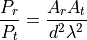
with the following equation for the case of an isotropic antenna with no heat loss:
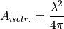
The final equation becomes:
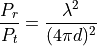
Modern extensions to this original equation are:
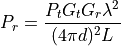
With:
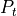 : transmission power (W)
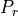 : reception power (W)
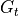 : transmission gain (unit-less)
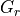 : reception gain (unit-less)
: wavelength (m)
: distance (m)
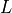 : system loss (unit-less)
In the implementation, is calculated as
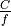, where  m/s is the speed of light in
vacuum, and
m/s is the speed of light in
vacuum, and  is the frequency in Hz which can be configured by
the user via the Frequency attribute.
is the frequency in Hz which can be configured by
the user via the Frequency attribute.
The Friis model is valid only for propagation in free space within
the so-called far field region, which can be considered
approximately as the region for  .
The model will still return a value for 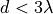, as
doing so (rather than triggering a fatal error) is practical for
many simulation scenarios. However, we stress that the values
obtained in such conditions shall not be considered realistic.
.
The model will still return a value for 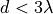, as
doing so (rather than triggering a fatal error) is practical for
many simulation scenarios. However, we stress that the values
obtained in such conditions shall not be considered realistic.
Related with this issue, we note that the Friis formula is
undefined for 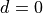, and results in
 for 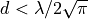.
for 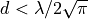.
Both these conditions occur outside of the far field region, so in principle the Friis model shall not be used in these conditions. In practice, however, Friis is often used in scenarios where accurate propagation modeling is not deemed important, and values of can occur.
To allow practical use of the model in such scenarios, we have to 1) return some value for , and 2) avoid large discontinuities in propagation loss values (which could lead to artifacts such as bogus capture effects which are much worse than inaccurate propagation loss values). The two issues are conflicting, as, according to the Friis formula, 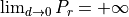; so if, for , we use a fixed loss value, we end up with an infinitely large discontinuity, which as we discussed can cause undesirable simulation artifacts.
To avoid these artifact, this implementation of the Friis model
provides an attribute called MinLoss which allows to specify the
minimum total loss (in dB) returned by the model. This is used in
such a way that
continuously increases for 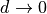, until
MinLoss is reached, and then stay constant; this allow to
return a value for and at the same time avoid
discontinuities. The model won’t be much realistic, but at least
the simulation artifacts discussed before are avoided. The default value of
MinLoss is 0 dB, which means that by default the model will return
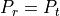 for 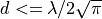.
We note that this value of is outside of the far field
region, hence the validity of the model in the far field region is
not affected.
29.1.2. TwoRayGroundPropagationLossModel¶
This model implements a Two-Ray Ground propagation loss model ported from NS2
The Two-ray ground reflection model uses the formula
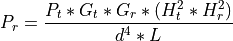
The original equation in Rappaport’s book assumes 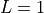. To be consistent with the free space equation, is added here.
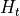 and 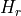 are set at the respective nodes  coordinate plus a model parameter
set via SetHeightAboveZ.
coordinate plus a model parameter
set via SetHeightAboveZ.
The two-ray model does not give a good result for short distances, due to the oscillation caused by constructive and destructive combination of the two rays. Instead the Friis free-space model is used for small distances.
The crossover distance, below which Friis is used, is calculated as follows:
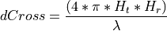
In the implementation, is calculated as
, where m/s is the speed of light in
vacuum, and is the frequency in Hz which can be configured by
the user via the Frequency attribute.
29.1.3. LogDistancePropagationLossModel¶
This model implements a log distance propagation model.
The reception power is calculated with a so-called log-distance propagation model:
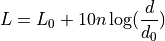
where:
: the path loss distance exponent
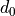 : reference distance (m)
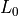 : path loss at reference distance (dB)
: path loss (dB)
When the path loss is requested at a distance smaller than the reference distance, the tx power is returned.
29.1.4. ThreeLogDistancePropagationLossModel¶
This model implements a log distance path loss propagation model with three distance fields. This model is the same as ns3::LogDistancePropagationLossModel except that it has three distance fields: near, middle and far with different exponents.
Within each field the reception power is calculated using the log-distance propagation equation:
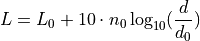
Each field begins where the previous ends and all together form a continuous function.
There are three valid distance fields: near, middle, far. Actually four: the first from 0 to the reference distance is invalid and returns txPowerDbm.
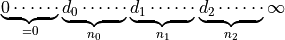
Complete formula for the path loss in dB:
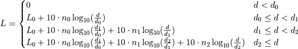
where:
: three distance fields (m)
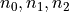 : path loss distance exponent for each field (unitless)
: path loss at reference distance (dB)
: path loss (dB)
When the path loss is requested at a distance smaller than the reference
distance , the tx power (with no path loss) is returned. The
reference distance defaults to 1m and reference loss defaults to
FriisPropagationLossModel with 5.15 GHz and is thus = 46.67 dB.
29.1.5. JakesPropagationLossModel¶
29.1.5.1. ToDo¶
29.1.6. RandomPropagationLossModel¶
The propagation loss is totally random, and it changes each time the model is called. As a consequence, all the packets (even those between two fixed nodes) experience a random propagation loss.
29.1.7. NakagamiPropagationLossModel¶
This propagation loss model implements the Nakagami-m fast fading model, which accounts for the variations in signal strength due to multipath fading. The model does not account for the path loss due to the distance traveled by the signal, hence for typical simulation usage it is recommended to consider using it in combination with other models that take into account this aspect.
The Nakagami-m distribution is applied to the power level. The probability density function is defined as
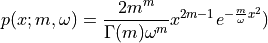
with  the fading depth parameter and
the fading depth parameter and  the average received power.
the average received power.
It is implemented by either a GammaRandomVariable or a ErlangRandomVariable
random variable.
The implementation of the model allows to specify different values of
the parameter (and hence different fast fading profiles)
for three different distance ranges:
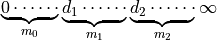
For 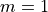 the Nakagami-m distribution equals the Rayleigh distribution. Thus this model also implements Rayleigh distribution based fast fading.
29.1.8. FixedRssLossModel¶
This model sets a constant received power level independent of the transmit power.
The received power is constant independent of the transmit power; the user must set received power level. Note that if this loss model is chained to other loss models, it should be the first loss model in the chain. Else it will disregard the losses computed by loss models that precede it in the chain.
29.1.9. MatrixPropagationLossModel¶
The propagation loss is fixed for each pair of nodes and doesn’t depend on their actual positions. This model should be useful for synthetic tests. Note that by default the propagation loss is assumed to be symmetric.
29.1.10. RangePropagationLossModel¶
This propagation loss depends only on the distance (range) between transmitter and receiver.
The single MaxRange attribute (units of meters) determines path loss. Receivers at or within MaxRange meters receive the transmission at the transmit power level. Receivers beyond MaxRange receive at power -1000 dBm (effectively zero).
29.1.11. OkumuraHataPropagationLossModel¶
This model is used to model open area pathloss for long distance (i.e., > 1 Km). In order to include all the possible frequencies usable by LTE we need to consider several variants of the well known Okumura Hata model. In fact, the original Okumura Hata model [hata] is designed for frequencies ranging from 150 MHz to 1500 MHz, the COST231 [cost231] extends it for the frequency range from 1500 MHz to 2000 MHz. Another important aspect is the scenarios considered by the models, in fact the all models are originally designed for urban scenario and then only the standard one and the COST231 are extended to suburban, while only the standard one has been extended to open areas. Therefore, the model cannot cover all scenarios at all frequencies. In the following we detail the models adopted.
The pathloss expression of the COST231 OH is:
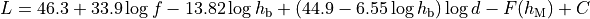
where
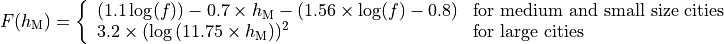
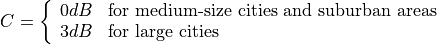
and
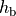 : eNB height above the ground [m]
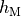 : UE height above the ground [m]
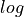 : is a logarithm in base 10 (this for the whole document)
This model is only for urban scenarios.
The pathloss expression of the standard OH in urban area is:
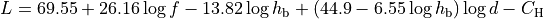
where for small or medium sized city
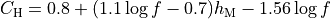
and for large cities
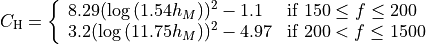
There extension for the standard OH in suburban is
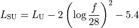
where
: pathloss in urban areas
The extension for the standard OH in open area is
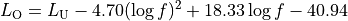
The literature lacks of extensions of the COST231 to open area (for suburban it seems that we can just impose C = 0); therefore we consider it a special case fo the suburban one.
29.1.12. Cost231PropagationLossModel¶
29.1.12.1. ToDo¶
29.1.13. ItuR1411LosPropagationLossModel¶
This model is designed for Line-of-Sight (LoS) short range outdoor communication in the frequency range 300 MHz to 100 GHz. This model provides an upper and lower bound respectively according to the following formulas
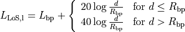
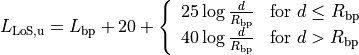
where the breakpoint distance is given by
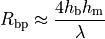
and the above parameters are
: eNB height above the ground [m]
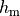 : UE height above the ground [m]
and 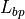 is the value for the basic transmission loss at the break point, defined as:

The value used by the simulator is the average one for modeling the median pathloss.
29.1.14. ItuR1411NlosOverRooftopPropagationLossModel¶
This model is designed for Non-Line-of-Sight (LoS) short range outdoor communication over rooftops in the frequency range 300 MHz to 100 GHz. This model includes several scenario-dependent parameters, such as average street width, orientation, etc. It is advised to set the values of these parameters manually (using the ns-3 attribute system) according to the desired scenario.
In detail, the model is based on [walfisch] and [ikegami], where the loss is expressed as the sum of free-space loss (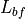), the diffraction loss from rooftop to street (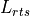) and the reduction due to multiple screen diffraction past rows of building (). The formula is:
The free-space loss is given by:
where:
) [m]
The term takes into account the width of the street and its orientation, according to the formulas
where:
: is the height of the rooftop [m]
: is the height of the mobile [m]
: is the street orientation with respect to the direct path (degrees)
The multiple screen diffraction loss depends on the BS antenna height relative to the building height and on the incidence angle. The former is selected as the higher antenna in the communication link. Regarding the latter, the “settled field distance” is used for select the proper model; its value is given by
with
Therefore, in case of (where l is the distance over which the building extend), it can be evaluated according to
![L_{msd} = L_{bsh} + k_{a} + k_{d}\log{(d/1000)} + k_{f}\log{(f)} - 9\log{(b)}
L_{bsh} = \left\{ \begin{array}{ll} -18\log{(1+\Delta h_{b})} & \mbox{for } h_{b} > h_{r} \\ 0 & \mbox{for } h_{b} \le h_{hr} \end{array}\right.
k_a = \left\{ \begin{array}{lll}
71.4 & \mbox{for } h_{b} > h_{r} \mbox{ and } f>2000 \mbox{ MHz} \\
54 & \mbox{for } h_{b} > h_{r} \mbox{ and } f\le2000 \mbox{ MHz} \\
54-0.8\Delta h_b & \mbox{for } h_{b} \le h_{r} \mbox{ and } d \ge 500 \mbox{ m} \\
54-1.6\Delta h_b & \mbox{for } h_{b} \le h_{r} \mbox{ and } d < 500 \mbox{ m} \\
\end{array} \right.
k_d = \left\{ \begin{array}{ll}
18 & \mbox{for } h_{b} > h_{r} \\
18 -15\frac{\Delta h_b}{h_r} & \mbox{for } h_{b} \le h_{r}
\end{array} \right.
k_f = \left\{ \begin{array}{ll}
-8 & \mbox{for } f>2000 \mbox{ MHz} \\
-4 + 0.7(f/925 -1) & \mbox{for medium city and suburban centres and} f\le2000 \mbox{ MHz} \\
-4 + 1.5(f/925 -1) & \mbox{for metropolitan centres and } f\le2000 \mbox{ MHz}
\end{array}\right.](_images/math/07bf8b989fed91036910696855866025548035f4.png)
Alternatively, in case of , the formula is:
where
where:

29.1.15. Kun2600MhzPropagationLossModel¶
This is the empirical model for the pathloss at 2600 MHz for urban areas which is described in [kun2600mhz].
The model is as follows. Let be the distance between the transmitter and the receiver
in meters; the pathloss in dB is calculated as:
29.1.16. ThreeGppPropagationLossModel¶
The base class ThreeGppPropagationLossModel and its derived classes implement
the path loss and shadow fading models described in 3GPP TR 38.901 [38901].
3GPP TR 38.901 includes multiple scenarios modeling different propagation
environments, i.e., indoor, outdoor urban and rural, for frequencies between
0.5 and 100 GHz.
Implemented features:
Path loss and shadowing models (3GPP TR 38.901, Sec. 7.4.1)
Autocorrelation of shadow fading (3GPP TR 38.901, Sec. 7.4.4)
Channel condition models (3GPP TR 38.901, Sec. 7.4.2)
O2I Low/High Building penetration losses (3GPP TR 38.901, Sec. 7.4.3.1). The Low/High Building penetration losses can be enabled for UEs that are in O2I channel condition state. For determining the O2O/O2I state in ns-3 there are two possible scenario setups: 1) ns-3 buildings and
BuildingsChannelConditionModelare used. Then the O2I condition is calculated based on the buildings in the scenario. In this case losses are considered by default, however there is the option to disable them by setting theThreeGppPropagationLossModelattribute BuildingPenetrationLossesEnabled to false. 2) ns-3 buildings are not used, instead one of the 3GPP stochastic channel condition models is used, such as:ThreeGppRmaChannelConditionModel,ThreeGppUmaChannelConditionModel,ThreeGppUmiStreetCanyonChannelConditionModel. These models are extended to calculate the O2O/O2I state probabilistically. Additionally, it is possible to configure to calculate O2I condition deterministically based on the UE height. In both cases, the O2O/O2I is updated at the same time as LOS/nLOS, i.e. with the same periodicity. For other 3GPP channel condition models in ns-3 there are no O2I losses because both TX and RX, are either indoor or outdoor, such as in the case of indoor or V2V scenarios. For this case, to consider O2I Low/High Losses, the attribute of theChannelConditionO2iThreshold (that indicates the ratio between O2O and O2I states) must be set to a value different from 0. Possible values are from 0 to 1, with 1 corresponding to 100% O2I conditions.
To be implemented:
O2I Car penetration losses (3GPP TR 38.901, Sec. 7.4.3.2).
Spatial consistent update of the channel states (3GPP TR 38.901 Sec. 7.6.3.3)
Configuration
The ThreeGppPropagationLossModel instance is paired with a ChannelConditionModel
instance used to retrieve the LOS/NLOS channel condition. By default, a 3GPP
channel condition model related to the same scenario is set (e.g., by default,
ThreeGppRmaPropagationLossModel is paired with
ThreeGppRmaChannelConditionModel), but it can be configured using
the method SetChannelConditionModel. The channel condition models are stored inside the
propagation module, for a limitation of the current spectrum API and to avoid
a circular dependency between the spectrum and the propagation modules. Please
note that it is necessary to install at least one ChannelConditionModel when
using any ThreeGppPropagationLossModel subclass. Please look below for more
information about the Channel Condition models.
The operating frequency has to be set using the attribute “Frequency”, otherwise an assert is raised. The addition of the shadow fading component can be enabled/disabled through the attribute “ShadowingEnabled”. Other scenario-related parameters can be configured through attributes of the derived classes.
One other attribute, “EnforceParameterRanges”, can be set to true if the model is configured with parameters that fall outside of the applicability range specified in TR38.901. By default, the simulator will only warn (if logging is enabled) if a value is outside of the applicability range. If this parameter is set to true, the simulation will abort with an error message (instead of just logging a warning) if the applicability range is exceeded.
Implementation details
The method DoCalcRxPower computes the propagation loss considering the path loss and the shadow fading (if enabled). The path loss is computed by the method GetLossLos or GetLossNlos depending on the LOS/NLOS channel condition, and their implementation is left to the derived classes. The shadow fading is computed by the method GetShadowing, which generates an additional random loss component characterized by Gaussian distribution with zero mean and scenario-specific standard deviation. Subsequent shadowing components of each BS-UT link are correlated as described in 3GPP TR 38.901, Sec. 7.4.4 [38901].
Note 1: The TR defines height ranges for UTs and BSs, depending on the chosen propagation model (for the exact values, please see below in the specific model documentation). If the user does not set correct values, the model will emit a warning but perform the calculation anyway.
Note 2: The 3GPP model is originally intended to be used to represent BS-UT links. However, in ns-3, we may need to compute the pathloss between two BSs or UTs to evaluate the interference. We have decided to support this case by considering the tallest node as a BS and the smallest as a UT. As a consequence, the height values may be outside the validity range of the chosen class: therefore, an inaccuracy warning may be printed, but it can be ignored.
There are four derived class, each one implementing the propagation model for a different scenario:
29.1.16.1. ThreeGppRMaPropagationLossModel¶
This class implements the LOS/NLOS path loss and shadow fading models described in 3GPP TR 38.901 [38901], Table 7.4.1-1 for the RMa scenario. It supports frequencies between 0.5 and 30 GHz. It is possible to configure some scenario-related parameters through the attributes AvgBuildingHeight and AvgStreetWidth.
As specified in the TR, the 2D distance between the transmitter and the receiver should be between 10 m and 10 km for the LOS case, or between 10 m and 5 km for the NLOS case, otherwise the model may not be accurate (a warning message is printed if the user has enabled logging on the model, or the simulation aborts, depending on whether “EnforceParameterRanges” is set to true). Also, the height of the base station (hBS) should be between 10 m and 150 m, while the height of the user terminal (hUT) should be between 1 m and 10 m.
29.1.16.2. ThreeGppUMaPropagationLossModel¶
This implements the LOS/NLOS path loss and shadow fading models described in 3GPP TR 38.901 [38901], Table 7.4.1-1 for the UMa scenario. It supports frequencies between 0.5 and 100 GHz.
As specified in the TR, the 2D distance between the transmitter and the receiver should be between 10 m and 5 km both for the LOS and NLOS cases, otherwise the model may not be accurate (a warning message is printed if the user has enabled logging on the model, or the simulation aborts, depending on whether “EnforceParameterRanges” is set to true). Also, the height of the base station (hBS) should be 25 m and the height of the user terminal (hUT) should be between 1.5 m and 22.5 m.
29.1.16.3. ThreeGppUmiStreetCanyonPropagationLossModel¶
This implements the LOS/NLOS path loss and shadow fading models described in 3GPP TR 38.901 [38901], Table 7.4.1-1 for the UMi-Street Canyon scenario. It supports frequencies between 0.5 and 100 GHz.
As specified in the TR, the 2D distance between the transmitter and the receiver should be between 10 m and 5 km both for the LOS and NLOS cases, otherwise the model may not be accurate (a warning message is printed if the user has enabled logging on the model, or the simulation aborts, depending on whether “EnforceParameterRanges” is set to true). Also, the height of the base station (hBS) should be 10 m and the height of the user terminal (hUT) should be between 1.5 m and 10 m (the validity range is reduced because we assume that the height of the UT nodes is always lower that the height of the BS nodes).
29.1.16.4. ThreeGppIndoorOfficePropagationLossModel¶
This implements the LOS/NLOS path loss and shadow fading models described in 3GPP TR 38.901 [38901], Table 7.4.1-1 for the Indoor-Office scenario. It supports frequencies between 0.5 and 100 GHz.
As specified in the TR, the 3D distance between the transmitter and the receiver should be between 1 m and 150 m both for the LOS and NLOS cases, otherwise the model may not be accurate (a warning log message is printed if the user has enabled logging on the model, or the simulation aborts, depending on whether “EnforceParameterRanges” is set to true).
29.1.16.5. Testing¶
The test suite ThreeGppPropagationLossModelsTestSuite provides test cases for the classes
implementing the 3GPP propagation loss models.
The test cases ThreeGppRmaPropagationLossModelTestCase,
ThreeGppUmaPropagationLossModelTestCase,
ThreeGppUmiPropagationLossModelTestCase and
ThreeGppIndoorOfficePropagationLossModelTestCase compute the path loss between two nodes and compares it with the value obtained using the formulas in 3GPP TR 38.901 [38901], Table 7.4.1-1.
The test case ThreeGppShadowingTestCase checks if the shadowing is correctly computed by testing the deviation of the overall propagation loss from the path loss. The test is carried out for all the scenarios, both in LOS and NLOS condition.
29.2. ChannelConditionModel¶
The loss models require to know if two nodes are in Line-of-Sight (LoS) or if
they are not. The interface for that is represented by this class. The main
method is GetChannelCondition (a, b), which returns a ChannelCondition object
containing the information about the channel state.
We modeled the LoS condition in two ways: (i) by using a probabilistic model specified by the 3GPP (), and (ii) by using an ns-3 specific building-aware model, which checks the space position of the BSs and the UTs. For what regards the first option, the probability is independent of the node location: in other words, following the 3GPP model, two UT spatially separated by an epsilon may have different LoS conditions. To take into account mobility, we have inserted a parameter called “UpdatePeriod,” which indicates how often a 3GPP-based channel condition has to be updated. By default, this attribute is set to 0, meaning that after the channel condition is generated, it is never updated. With this default value, we encourage the users to run multiple simulations with different seeds to get statistical significance from the data. For the users interested in using mobile nodes, we suggest changing this parameter to a value that takes into account the node speed and the desired accuracy. For example, lower-speed node conditions may be updated in terms of seconds, while high-speed UT or BS may be updated more often.
The two approach are coded, respectively, in the classes:
ThreeGppChannelConditionModelBuildingsChannelConditionModel(see thebuildingmodule documentation for further details)
29.2.1. ThreeGppChannelConditionModel¶
This is the base class for the 3GPP channel condition models. It provides the possibility to updated the condition of each channel periodically, after a given time period which can be configured through the attribute “UpdatePeriod”. If “UpdatePeriod” is set to 0, the channel condition is never updated. It has five derived classes implementing the channel condition models described in 3GPP TR 38.901 [38901] for different propagation scenarios.
29.2.1.1. ThreeGppRmaChannelConditionModel¶
This implements the statistical channel condition model described in 3GPP TR 38.901 [38901], Table 7.4.2-1, for the RMa scenario.
29.2.1.2. ThreeGppUmaChannelConditionModel¶
This implements the statistical channel condition model described in 3GPP TR 38.901 [38901], Table 7.4.2-1, for the UMa scenario.
29.2.1.3. ThreeGppUmiStreetCanyonChannelConditionModel¶
This implements the statistical channel condition model described in 3GPP TR 38.901 [38901], Table 7.4.2-1, for the UMi-Street Canyon scenario.
29.2.1.4. ThreeGppIndoorMixedOfficeChannelConditionModel¶
This implements the statistical channel condition model described in 3GPP TR 38.901 [38901], Table 7.4.2-1, for the Indoor-Mixed office scenario.
29.2.1.5. ThreeGppIndoorOpenOfficeChannelConditionModel¶
This implements the statistical channel condition model described in 3GPP TR 38.901 [38901], Table 7.4.2-1, for the Indoor-Open office scenario.
29.2.2. Testing¶
The test suite ChannelConditionModelsTestSuite contains a single test case:
ThreeGppChannelConditionModelTestCase, which tests all the 3GPP channel condition models. It determines the channel condition between two nodes multiple times, estimates the LOS probability, and compares it with the value given by the formulas in 3GPP TR 38.901 [38901], Table 7.4.2-1
29.3. PropagationDelayModel¶
The following propagation delay models are implemented:
ConstantSpeedPropagationDelayModel
RandomPropagationDelayModel
29.3.1. ConstantSpeedPropagationDelayModel¶
In this model, the signal travels with constant speed. The delay is calculated according with the transmitter and receiver positions. The Euclidean distance between the Tx and Rx antennas is used. Beware that, according to this model, the Earth is flat.
29.3.2. RandomPropagationDelayModel¶
The propagation delay is totally random, and it changes each time the model is called. All the packets (even those between two fixed nodes) experience a random delay. As a consequence, the packets order is not preserved.
29.4. Models for vehicular environments¶
The 3GPP TR 37.885 [37885] specifications extends the channel modeling framework described in TR 38.901 [38901] to simulate wireless channels in vehicular environments. The extended framework supports frequencies between 0.5 to 100 GHz and provides the possibility to simulate urban and highway propagation environments. To do so, new propagation loss and channel condition models, as well as new parameters for the fast fading model, are provided.
29.4.1. Vehicular channel condition models¶
To properly capture channel dynamics in vehicular environments, three different channel conditions have been identified:
LOS (Line Of Sight): represents the case in which the direct path between the transmitter and the receiver is not blocked
NLOSv (Non Line Of Sight vehicle): when the direct path between the transmitter and the receiver is blocked by a vehicle
NLOS (Non Line Of Sight): when the direct path is blocked by a building
TR 37.885 includes two models that can be used to determine the condition of the wireless channel between a pair of nodes, the first for urban and the second for highway environments. Each model includes both a deterministic and a stochastic part, and works as follows:
The model determines the presence of buildings obstructing the direct path between the communicating nodes. This is done in a deterministic way, looking at the possible interceptions between the direct path and the buildings. If the path is obstructed, the channel condition is set to NLOS.
If not, the model determines the presence of vehicles obstructing the direct path. This is done using a probabilistic model, which is specific for the scenario of interest. If the path is obstructed, the channel condition is set to NLOSv, otherwise is set to LOS.
These models have been implemented by extending the interface
ChannelConditionModel with the following classes. They have been included in
the building module, because they make use of Buildings objects to determine
the presence of obstructions caused by buildings.
ThreeGppV2vUrbanChannelConditionModel: implements the model described in Table 6.2-1 of TR 37.885 for the urban scenario.
ThreeGppV2vHighwayChannelConditionModel: implements the model described in Table 6.2-1 of TR 37.885 for the highway scenario.
These models rely on Buildings objects to determine the presence
of obstructing buildings. When considering large scenarios with a large number of
buildings, this process may become computationally demanding and dramatically
increase the simulation time.
To solve this problem, we implemented two fully-probabilistic models
that can be used as an alternative to the ones included in TR 37.885.
These models are based on the work carried out by M. Boban et al. [Boban2016Modeling],
which derived a statistical representation of the three channel conditions,
With the fully-probabilistic models there is no need to determine the presence of blocking
buildings in a deterministic way, and therefore the computational effort is
reduced.
To determine the channel condition, these models account for the propagation
environment, i.e., urban or highway, as well as for the density of vehicles in the
scenario, which can be high, medium, or low.
The classes implementing the fully-probabilistic models are:
ProbabilisticV2vUrbanChannelConditionModel: implements the model described in [Boban2016Modeling] for the urban scenario.
ProbabilisticV2vHighwayChannelConditionModel: implements the model described in [Boban2016Modeling] for the highway scenario.
Both the classes own the attribute “Density”, which can be used to select the
proper value depending on the scenario that have to be simulated.
Differently from the hybrid models described above, these classes have been
included in the propagation module, since they do not have any dependency on the
building module.
NOTE: Both the hybrid and the fully-probabilistic models supports the modeling of outdoor scenarios, no support is provided for the modeling of indoor scenarios.
29.4.2. Vehicular propagation loss models¶
The propagation models described in TR 37.885 determines the attenuation caused by path loss and shadowing by considering the propagation environment and the channel condition.
These models have been implemented by extending the interface
ThreeGppPropagationLossModel with the following classes, which
are part of the propagation module:
ThreeGppV2vUrbanPropagationLossModel: implements the models defined in Table 6.2.1-1 of TR 37.885 for the urban scenario.
ThreeGppV2vHighwayPropagationLossModel: implements the models defined in Table 6.2.1-1 of TR 37.885 for the highway scenario.
As for all the classes extending the interface ThreeGppPropagationLossModel,
they have to be paired with an instance of the class ChannelConditionModel
which is used to determine the channel condition.
This is done by setting the attribute ChannelConditionModel.
To build the channel modeling framework described in TR 37.885,
ThreeGppV2vUrbanChannelConditionModel or
ThreeGppV2vHighwayChannelConditionModel should be used, but users
are allowed to test any other combination.
29.4.3. Vehicular fast fading model¶
The fast fading model described in Sec. 6.2.3 of TR 37.885 is based on the one
specified in TR 38.901, whose implementation is provided in the spectrum module
(see the spectrum module documentation).
This model is general and includes different parameters which can
be tuned to simulate multiple propagation environments.
To better model the channel dynamics in vehicular environments, TR 37.885
provides new sets of values for these parameters, specific for
vehicle-to-vehicle transmissions in urban and highway scenarios.
To select the parameters for vehicular scenarios, it is necessary to set
the attribute “Scenario” of the class ThreeGppChannelModel using the value
“V2V-Urban” or “V2V-Highway”.
edditionally, TR 37.885 specifies a new equation to compute the Doppler component,
which accounts for the mobility of both nodes, as well as scattering
from the environment.
In particular, the scattering effect is considered by deviating the Doppler
frequency by a random value, whose distribution depends on the parameter  .
TR 37.885 specifies that should be set to the maximum speed of the
vehicles in the layout and, if
.
TR 37.885 specifies that should be set to the maximum speed of the
vehicles in the layout and, if  , the scattering effect is not considered.
The Doppler equation is implemented in the class
, the scattering effect is not considered.
The Doppler equation is implemented in the class ThreeGppSpectrumPropagationLossModel.
By means of the attribute “vScatt”, it is possible to adjust the value of
(by default, the value is set to 0).
29.4.4. Example¶
We implemented the example three-gpp-v2v-channel-example.cc which shows how to
configure the different classes to simulate wireless propagation in vehicular
scenarios, it can be found in the folder examples/channel-models.
We considered two communicating vehicles moving within the scenario, and computed the SNR experienced during the entire simulation, with a time resolution of 10 ms. The vehicles are equipped with 2x2 antenna arrays modeled using the 3GPP antenna model. The bearing and the downtilt angles are properly configured and the optimal beamforming vectors are computed at the beginning of the simulation.
The simulation script accepts the following command line parameters:
frequency: the operating frequency in Hz
txPow: the transmission power in dBm
noiseFigure: the noise figure in dB
scenario: the simulation scenario, “V2V-Urban” or “V2V-Highway”
The “V2V-Urban” scenario simulates urban environment with a rectangular grid of buildings. The vehicles moves with a waypoint mobility model. They start from the same position and travel in the same direction, along the main street. The first vehicle moves at 60 km/h and the second at 30 km/h. At a certain point, the first vehicle turns left while the second continues on the main street.
The “V2V-Highway” scenario simulates an highway environment in which the two vehicles travel on the same lane, in the same direction, and keep a safety distance of 20 m. They maintain a constant speed of 140 km/h.
The example generates the output file example-output.txt. Each row of the
file is organized as follows:
Time[s] TxPosX[m] TxPosY[m] RxPosX[m] RxPosY[m] ChannelState SNR[dB] Pathloss[dB]
We also provide the bash script three-gpp-v2v-channel-example.sh which reads the
output file and generates two figures:
map.gif, a GIF representing the simulation scenario and vehicle mobility;
snr.png, which represents the behavior of the SNR.
29.5. References¶
Friis, H.T., “A Note on a Simple Transmission Formula,” Proceedings of the IRE , vol.34, no.5, pp.254,256, May 1946
M.Hata, “Empirical formula for propagation loss in land mobile radio services”, IEEE Trans. on Vehicular Technology, vol. 29, pp. 317-325, 1980
“Digital Mobile Radio: COST 231 View on the Evolution Towards 3rd Generation Systems”, Commission of the European Communities, L-2920, Luxembourg, 1989
J.Walfisch and H.L. Bertoni, “A Theoretical model of UHF propagation in urban environments,” in IEEE Trans. Antennas Propagat., vol.36, 1988, pp.1788- 1796
F.Ikegami, T.Takeuchi, and S.Yoshida, “Theoretical prediction of mean field strength for Urban Mobile Radio”, in IEEE Trans. Antennas Propagat., Vol.39, No.3, 1991
Sun Kun, Wang Ping, Li Yingze, “Path loss models for suburban scenario at 2.3GHz, 2.6GHz and 3.5GHz”, in Proc. of the 8th International Symposium on Antennas, Propagation and EM Theory (ISAPE), Kunming, China, Nov 2008.